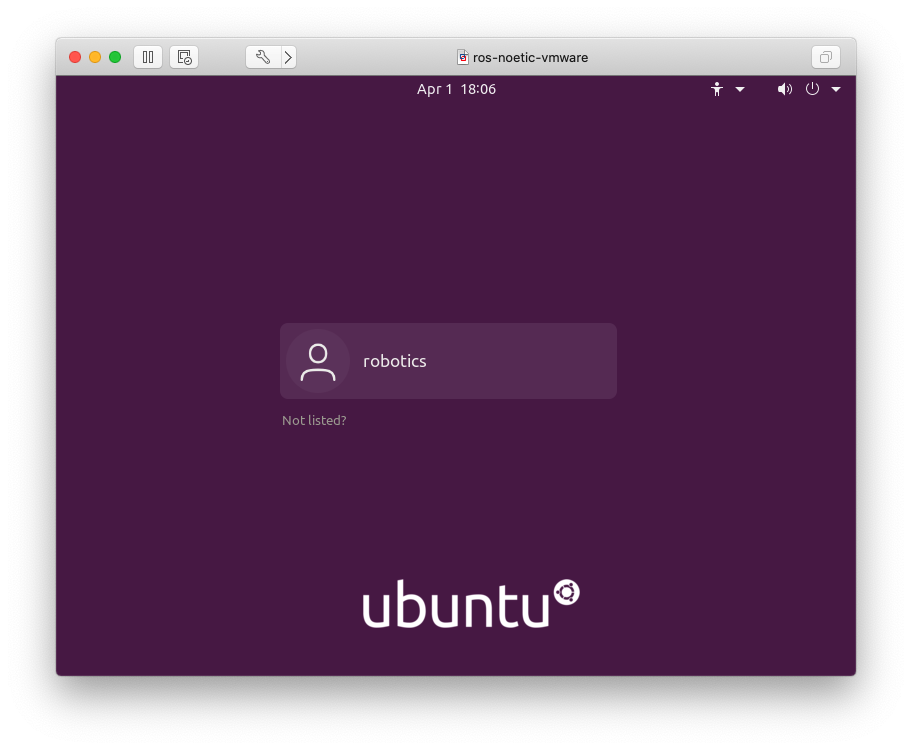
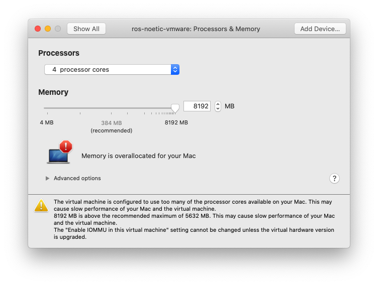
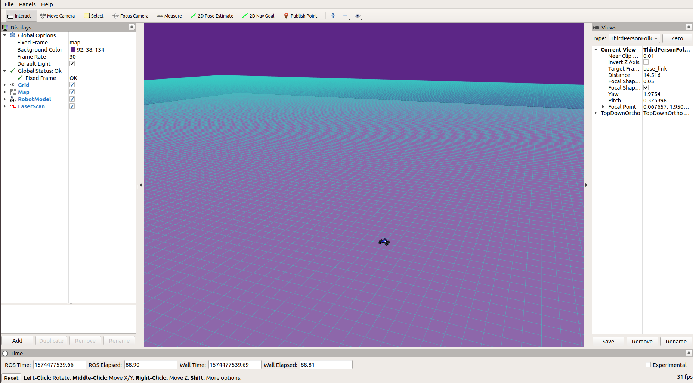

Project 1: Introduction

Overview
The goal of this assignment is to help you become acquainted with the MuSHR platform and other software you’ll use in the programming projects.
First, you’ll set up the CSE 478 virtual machine environment and learn about ROS (including some brief refreshers on using the terminal). Then, you’ll write Python code to interface with ROS, and learn to use the NumPy library to write computationally-efficient code. At the end of this document, we’ve also provided some useful commands and links for you to learn more.
This project should be completed in your assigned groups. Please contact course staff if you have not been assigned a group or do not have access to your group’s gitlab repository.
1. Setting Up the Virtual Machine
Ensure your disk has at least 14GB of space.
Download the course virtual machine (~5.8GB) from https://courses.cs.washington.edu/courses/cse478/data/. You’ll need both the
.vmdkand the.ovffiles. Right-click on the files and “Save Link As…”, making sure they’re saved to the same directory.Download VMware software to run the virtual machine from http://vmware.cs.washington.edu/ (VMware Workstation Player for Windows and Linux, VMware Fusion for macOS). More instructions are available from the CSE Lab here.
If you have an Apple silicon device, you will be using the UTM hypervisor https://mac.getutm.app/ with a different virtual machine.
Please download the.utmvirtual machine image from https://courses.cs.washington.edu/courses/cse478/data/ and run it with UTM. You should be able to log in with no username or password necessary, but if needed, the password isprl_robot. Other instructions should remain the same. Note this is in beta, so some hiccups are expected. Contact the course staff for more details!Install and launch the VMWare software. Choose “Import existing virtual machine” and select the
.ovffile that you downloaded.Log in to your virtual machine with the username
roboticsand passwordrobotics.
VM login screen
VM Troubleshooting
Error: Not enough physical memory is available to power on this virtual machine with its configured settings.
The VM is pre-configured with 4GB of memory, which your computer may not be able to support. To fix this, navigate to “Virtual Machine > Settings > Processors & Memory” (may be different on Windows) and reduce from 4096MB.

VM memory settings
If your VM was previously able to power on but you start seeing this error, there may be another process on your computer that’s taking up more memory. Try closing those processes before starting the VM.
Recommended: Enable 3D Graphics Acceleration
Turning on 3D graphics acceleration will improve the frame rate that RViz runs at, so moving the camera around and driving with the keyboard should be much smoother. You’ll need to shut down your virtual machine completely first. Instructions for VMWare Workstation and VMWare Fusion.
2. Getting Started with ROS
The Robot Operating System (ROS) is a robotics middleware framework (not actually an operating system) that is commonly used in robotics platforms. MuSHR uses ROS in various ways, the most significant of which is as an interprocess communications provider. By implementing functionalities in many separate “nodes” (each their own process)1 and relying on ROS mechanisms to communicate, MuSHR can seamlessly integrate custom software with existing, off-the-shelf ROS components. Gaining a grasp of fundamental ROS concepts will help you make the most of the MuSHR system, and the many other robots which use ROS.
ROS code is organized into packages, which can contain executables, libraries and other information like message formats, geometric meshes, and maps. Some of these executables may be nodes, processes that register themselves with a ROS Master and communicate with other nodes. A package can have multiple nodes. Each package has a package.xml file which specifies dependencies, as well as a CMakeLists.txt makefile. Most ROS code is written in Python or C++ (though there are many community-driven efforts to support other languages, including Rust and JavaScript).
ROS development is done in a workspace, a specially structured file tree that enables you to work on many separate packages and build them all at once. For this course, we’ve crafted a repository ~/dependencies_ws that combines all of the key MuSHR packages you’ll need in order to run the simulator alongside starter code and packages for each assignment. This means you won’t have to create any packages.2
ROS workspaces are designed to be layered, which allows you to build sets of packages separately and to override packages selectively. In fact, ROS itself is just a bunch of packages living in a workspace in /opt/ros/noetic, and for the most part every ROS workspace you’ll encounter will overlay this root workspace. We won’t be using the full power of workspace overlays, but we will be using two overlaid workspaces (in addition to the root installation workspace) to better manage the packages you’ll need to work with MuSHR.
First, let’s take a look at our workspaces.
$ ls ~/dependencies_ws/
build devel logs src
$ ls ~/mushr_ws/
build devel logs src
Terminal Tip: ls
The ls command lists the contents of a directory. In a path like ~/dependencies_ws, the ~ is shorthand for your home directory (/home/robotics for this virtual machine).
You can use tab completion rather than typing out the entire command. Try typing ls ~/dep<TAB>. If there are multiple completions, press the tab key twice to see all the options.
As the names indicate, one workspace is dedicated to the dependencies you’ll need for your projects. They’re set up for you, and you shouldn’t need to modify them. The mushr_ws is for your project code.
The key part of the workspace is the src folder which contains packages. The others are automatically generated at build time. Pretty simple!
Let’s update and build the dependencies:
$ source /opt/ros/noetic/setup.bash
$ cd ~/dependencies_ws/src/cse478_dependencies/
$ git pull --recurse-submodules
$ rosdep install --from-paths . --ignore-src -y -r
$ cd ~/dependencies_ws
$ catkin clean # remove old build files
$ catkin build
Terminal Tip: cd
The cd command changes the current directory.
You’ll see a lot of colorful output, ending with a message saying how many packages were built. All catkin build did was compile a bunch of executables and dump build artifacts into the build and devel folders. However, your shell doesn’t know how to find and run them because they aren’t on the PATH. You will need to activate the workspace by running a special script that configures your shell’s environment variables to know about all of the build output. To activate a workspace, you run:
$ source ~/dependencies_ws/devel/setup.bashLet’s set up your project workspace. Clone your course repository into the ~/mushr_ws/src folder:
$ cd ~/mushr_ws/src/
$ git clone git@gitlab.cs.washington.edu:cse478/25wi/your_repo_name.git mushr478Git Troubleshooting
Error: Please make sure you have the correct access rights and the repository exists.
If you’re sure the repository link is correct, you may need to first tell GitLab about this virtual machine. Create a new public/private ssh key pair and add the public SSH key to GitLab.
$ ssh-keygen -t ed25519 -C "your_email@example.com"
$ cat ~/.ssh/id_ed25519.pub
<your public key>Copy the public key output from your terminal (Ctrl-Shift-C or right-click to copy) and open a web browser (still from the virtual machine). Sign in to https://gitlab.cs.washington.edu, edit your profile (in the top right), then select “SSH Keys” (in the left sidebar). You may also find these instructions useful.
Let’s take a look at the project starter files:
$ ls ~/mushr_ws/src/mushr478/
cse478 introduction README.mdThe README.md Markdown file describes the repository and provides some detailed information about running the autograder tests, which will be useful when you start writing code later in this project. cse478 and introduction are ROS packages: introduction is the package that you’ll edit in this project, while cse478 is a utility package that introduction shares with future projects. Each project will be its own ROS package.
Now we’re going to build and activate the workspaces in order to ensure that they’re overlaid:
$ # Activate root workspace
$ source /opt/ros/noetic/setup.bash
$ # Activate dependencies underlay (built previously)
$ source ~/dependencies_ws/devel/setup.bash
$ # Build and activate projects workspace
$ cd ~/mushr_ws/
$ catkin build
$ source ~/mushr_ws/devel/setup.bashNote that we sourced the dependencies workspace before we built the MuSHR project workspace mushr_ws. This way, the packages inside mushr_ws have access to the packages built in the dependencies_ws underlay.
You can verify that your workspaces are overlaid as expected by checking the output of catkin config from within mushr_ws. The second line should read Extending: /home/robotics/dependencies_ws/devel:/opt/ros/noetic.
If you wish to remove all the existing build files in a workspace and build from scratch:
$ catkin clean
$ catkin buildRebuilding Dependencies
If you plan to either (1) rebuild your dependencies (which you may need to if, for instance, we ask you to pull new dependencies) or (2) remove existing builds in mushr_ws, you should always activate the dependencies workspace before building the MuSHR workspace:
Assuming we’ve asked you to pull some new dependencies:
$ cd ~/dependencies_ws/src/cse478_dependencies/
$ git pull --recurse-submodules
$ catkin clean # remove old build files
$ catkin build
$ cd ~/mushr_ws/src/mushr478/
$ catkin clean
$ source ~/dependencies_ws/devel/setup.bash
$ catkin build
$ source ~/mushr_ws/devel/setup.bash3. Running the MuSHR Car in Simulation
This section will show you how to run the MuSHR simulator and visualize what is going on. Simulators are important because they allow you to test things quickly and without the risk of damaging a robot, the environment, or people. Our simulator uses a kinematic car model (with some noise sprinkled in), meaning it simply implements and integrates some equations that describe the ideal motion of a mechanical system. It will not perfectly reflect the real world dynamics of the car. Regardless, it is still useful for a lot of things.
We’ll run the simulator using a launch file. These are XML files that describe how different software components should be started. These files allow us to start a large number of ROS nodes with only few commands. To launch our simulator, open a terminal and run:
$ cd ~/mushr_ws/
$ source ~/mushr_ws/devel/setup.bash
$ roslaunch cse478 teleop.launchMoving forward, we won’t always spell out that you’ll need to activate the mushr_ws workspace to do something. But remember that you can’t interact with ROS without having activated a workspace in your terminal. If you try to roslaunch and your terminal says “Command ‘roslaunch’ not found”, you probably forgot to activate the workspace!
Like many rosXXX terminal commands, the first argument is the name of a package, and the second is the name of something inside that package (in this case, a launch file).
A small gray window should appear. The simulation is running, you just can’t see it yet!
Let’s try to convince ourselves of this. Open another terminal and run rosnode list to see all of the nodes running. Each of those nodes is a separate process. We can see the communication between nodes by examining the topics they are publishing messages to and subscribing to messages from. Messages are packets of information in a specific format that can be routed around a ROS system. Running rostopic list will display the names of all the open topics. We can actually see the simulation in action if we look at some of the messages coming from the simulated hardware. Let’s use the rostopic helper to view these messages:
$ rostopic echo /car/odomMessages will start streaming into your terminal. Now focus on the gray teleop window and use the WASD keys to send commands to the vehicle. W and A move forward and backward, S and D turn the steering wheel left and right. Notice how the numbers are changing in response to your commands?
To stop the simulation, press <Ctrl-C> in the teleop.launch terminal window.
Visualizing the Simulator
Start the simulation again. To visualize the simulation, open up a separate terminal and run:
$ rosrun rviz rviz -d ~/mushr_ws/src/mushr478/cse478/config/default.rvizIf you see error messages in your terminal like “Could not load model…”, remember to activate your workspace!
This will launch RViz with a configuration that has all the right topics visualized. A window like this should appear:

RViz visualizer
To drive the car, click on the small gray window and use the WASD keys.
In RViz, you will notice multiple panels. The right panel is the views panel. The “Target Frame” option tells the camera what to focus on. If you don’t want it to track the car, you can change it from “base_link” to “map”. The center panel is the view panel; you can zoom, pan, and rotate using the mouse and mouse wheel.
The top panel has a few tools, like Measure and Publish Point. Publish Point is particularly useful for relocating the MuSHR car. Just click on it, then click on the map; the simulator listens to the message RViz sends and sets the car position to match.
Finally, the left panel shows all of the ROS topics that RViz is subscribed to. For example, if you toggle off the checkbox for the Map topic, you will no longer see the map visualization (although it’s still being used by the simulator). You can add additional topics by clicking the “Add” button then “By topic”. Try adding the origin axes by adding a topic “By display type”. You will mainly add “By topic” but “By display type” may be useful in situations where the list of topics is too long to look through.
Remember, RViz is a visualizer, not a simulator. You can close RViz, but just like how the world continues when you close your eyes, the simulator will chug ahead. So far, we’ve been using RViz to visualize the ROS data being emitted by the simulator. In other situations, the information could come from the software running on a physical robot.
When you close RViz, it may prompt you to save your changes. Saving in RViz saves the RViz configuration, not the state of the simulator itself. Unless you’ve added new topics that you want visualized when RViz starts up, you probably don’t need to save those changes.
Custom RViz Configuration
If you launch RViz with:
$ rvizRViz will load its default configuration (which usually is empty). Try adding the topic that you are interested in, saving the RViz configuration (“File > Save Config”), and relaunching RViz. You should find all of the panels open in the same position, and all parameters like the topics being visualized or the camera position set to the same settings as before.
Changing Maps
We will now change the map to the second floor of CSE2. Let’s take a look at the teleop.launch file we’ve been using. You can find it inside cse478/launch. A fast way to move to the package is roscd3:
$ roscd cse478
$ pwd
/home/robotics/mushr_ws/src/mushr478/cse478Now open teleop.launch in launch/ using your favorite editor4:
$ YOUR_EDITOR launch/teleop.launchYou can see a comment that explains how to configure the map
<!-- We take a map path either as an environment variable or an argument.
The argument takes precedence. -->This means that we can either pass the map as argument each time like this,
$ roslaunch cse478 teleop.launch map:='$(find cse478)/maps/<map_name>.yaml'or by putting the same string into a variable named MAP in our terminal environment:
$ export MAP='$(find cse478)/maps/<map_name>.yaml'
$ roslaunch cse478 teleop.launchYou can use whichever way you like, but note that single quotes (') are important. The terminal treats double-quoted strings differently than single-quoted strings, and interchanging them may cause errors.
Use whichever method you prefer to set the map to
cse2_2.yamlfrom the cse478 package. Then, save a screenshot of RViz showing the new map. (Note that the car will start in the “walls” and therefore won’t be able to drive. Use the Publish Point tool in the top panel to place the car in an open hallway before driving with WASD.)
4. Testing Instructions
Each package contains a test directory with unit and integration tests built with the rosunit framework. The catkin test command provides a summary view of all test suites.
$ catkin test # Run all tests
$ catkin test introduction # Run tests for the introduction packageTo run individual test suites, the command will differ by the type of test suite.
For tests that use ROS (to start a node, or publish/subscribe to topics from the code being tested), use rostest to run the corresponding test launch file (which will end in .test).
$ rostest introduction pose_listener.test --textFor pure Python unit tests (which don’t use ROS), simply run the file:
$ python3 $(rospack find introduction)/test/fibonacci.pyQ1. Your First Publisher Node: Fibonacci
As you may recall from above, publishers and subscribers are how ROS manages interprocess communication. Publishers send out messages to a topic, while subscribers choose a topic to receive messages from. Publishers and subscribers can even be on different machines in a network, although we won’t take advantage of that feature in these projects.
We will be creating a simple ROS node that calculates the nth Fibonacci number. It will read n from a ROS parameter and publish the desired Fibonacci number to a ROS topic. The 0th Fibonacci number is 0, 1st is 1, 10th is 55, etc.
Q1.1: Implement the Fibonacci calculation in src/introduction/fibonacci.py. Then, verify your implementation on the provided test suite by running python3 test/fibonacci.py. You will need an O(n) implementation to pass the larger tests.
Q1.2: We’ve provided an annotated code skeleton to interface with ROS at scripts/fibonacci. Follow the instructions inline to complete the code. To evaluate your implementation, run:
$ rostest introduction fibonacci_small.testQ1.3: Finally, we will write a launch file for our node to make it easier to run. Since your Fibonacci calculator requires a ROS parameter to run, you will need to pass it to your node in your launch file. We have provided an annotated skeleton in launch/fibonacci.launch. Follow the inline instructions to complete the launch file and check your implementation.
$ rostest introduction fibonacci_launch.testLet’s run the publisher node and see its output directly, without the tests. After launching roscore, listen to the Fibonacci output topic. Then, start your Fibonacci node using fibonacci.launch. You should see the Fibonacci number appear on the /introduction/fib_output topic in terminal 2! You can then run the Fibonacci node with different values for index. Here are the commands to run:
$ # In terminal 1
$ roscore
$ # In terminal 2
$ rostopic echo /introduction/fib_output
$ # In terminal 3
$ roslaunch introduction fibonacci.launch
$ roslaunch introduction fibonacci.launch index:=20Q2. Your First Subscriber: PoseListener
In this question, we’ll combine ROS with the NumPy and Matplotlib scientific computing libraries. NumPy makes computations faster by using vectorization, and Matplotlib creates plots and other data visualizations.
We will compute the Euclidean norm in two ways: with regular Python for loops and with functions from NumPy. The input will be a 2D NumPy array5 of shape (N, D), which contains N vectors each of dimension D. The expected output will be a 1D NumPy array of shape (N,), where each entry is the Euclidean norm of the corresponding vector. For example:
\[ \begin{bmatrix}3 & 4\\5 & 12\\8 & 15\end{bmatrix} \rightarrow \begin{bmatrix}5\\13\\17\end{bmatrix} \]
Q2.1: Complete the norm_python function in src/introduction/listener.py. To index into a 2D array, NumPy extends the Python indexing syntax to take in multiple indices, with one for each dimension. If data represents the left matrix above, data[0, 0] returns 3 and data[2, 1] returns 15. Use Python for loops to compute the Euclidean norm and replace the zero entries in norm.
Q2.2: In the same file, complete the norm_numpy function. Try to use the NumPy functions np.sqrt and np.square.
After completing Q2.1 and Q2.2, expect your code to pass all the test cases when running python3 test/norms.py.
Run
python3 scripts/compare_normto compare the running time of your two implementations on 100 trials. This script will usematplotlibto plot the mean and standard deviation of your run time. Save the figure asruntime_comparison.png.
Q2.3: In the PoseListener class in the same file, initialize a subscriber to the car’s pose topic. To do so, you will need to pass the topic’s name, the message type being published and a callback function. Each time the subscriber receives a message, it will call the callback function to process the message data.
To find the right topic name to subscribe to, launch the car simulation again and run rostopic list to see all the topics being published. There’s one topic containing “car_pose” in its name. To figure out what type of messages are being sent on that topic, use rostopic info XXX/car_pose. When you construct the subscriber, pass self.callback as the callback function.
Q2.4: Fill in the PoseListener.callback method by extracting the x and y position from the pose messages, then saving them in self.storage. To see what a car pose message looks like, run your car in the simulator and rostopic echo XXX/car_pose. Alternatively, you can look up the message type being published online to see its fields. Expect your code to pass pose_listener.test.
$ rostest introduction pose_listener.testQ2.5: Now, let’s use the PoseListener to actually collect some data! In scripts/pose_listener, we’ve already used matplotlib to plot the xy-locations of your car and save the resulting plot to locations.png. Use your norm_numpy function to compute the car’s distance to the origin for all the xy-locations captured by the PoseListener. Then, use matplotlib to plot this distance as a function of time6, and save the resulting plot to distances.png.
First, start teleop.launch with the default sandbox.yaml map.
$ roslaunch cse478 teleop.launch map:='$(find mushr_sim)/maps/sandbox.yaml'
$ # Or if you previously set the MAP environment variable in your terminal or .bashrc file
$ export MAP='$(find mushr_sim)/maps/sandbox.yaml'
$ roslaunch cse478 teleop.launchThen, you can use the following launch configuration, which starts a path_publisher node (that will make the car follow a trajectory specified in a file) and your subscriber node. While passing the plan file, you can see the car’s movement in rviz.
$ # In a separate shell
$ roslaunch introduction path_publisher.launch plan_file:='$(find introduction)/plans/XXX.txt'Run the above configuration with the
figure_8.txtandtight_figure_8.txtplan files. For both plans, save the figures produced bypose_listenerfor submission:locations.pnganddistances.png.
Optional: Let your artistic side shine and create your own plan file! If you do, please submit the plan file (and any code you may have used to generate it), as well as the
locations.pngproducted bypose_listener.
Q3. Advanced Indexing with NumPy
Vectorization isn’t just limited to mathematical operations. NumPy supports a variety of different forms of indexing, but integer array indexing and Boolean array indexing are especially important for this course.
Q3.1: Complete the extract_fibonacci_rows function using integer array indexing (src/introduction/indexing.py).
Q3.2: Complete the increment_rows_with_odd_first_element function using Boolean array indexing (src/introduction/indexing.py).
After completing Q3.1 and Q3.2, expect your code to pass all the test cases when running python3 test/indexing.py.
Deliverables
Answer the following writeup questions in introduction/writeup/README.md, including the figures that you generated above. (Here is the syntax for including an image in Markdown.)
- Define in your own words what a node, topic, publisher, and subscriber are and how they relate to each other.
- What is the purpose of a launch file?
- Include the RViz screenshot showing the new map.
- Include your
runtime_comparison.pngfigure for the different norm implementations. - Include the
locations.pnganddistances.pngfigures for the planfigure_8.txt. - Include the
locations.pnganddistances.pngfigures for the plantight_figure_8.txt. - Optional: Include your own plan file, any code you wrote to generate it, and the resulting
locations.pngfigure.
Submission
Git is a version-control system that lets you back up your code to a remote server. That means that even if you accidentally delete all your code, the most recent version that you’ve backed up will be safe on the CSE GitLab servers. It’s also useful when multiple people are writing code together: one teammate can push their changes, and another can pull them down. Git will merge those changes together, and help identify when conflicts happen (e.g., when multiple people edited the same part of the file). You can learn more about using Git in this guide.
In this class, you’ll use Git to submit your final project (code and writeup). From the mushr478 directory, add all of the writeup files and changed code files. Commit those changes, then create a Git tag called submit-proj1. Pushing the tag is how we’ll know when your project is ready for grading.
$ cd ~/mushr_ws/src/mushr478/
$ git diff # See all your changes
$ git add . # Add all the changed files
$ git commit -m 'Finished Project 1!' # Or write a more descriptive commit message
$ git push # Push changes to your GitLab repository
$ git tag submit-proj1 # Create a tag named submit-proj1
$ git push --tags # Push the submit-proj1 tag to GitLabHelpful Tips
Using the Terminal
Here’s a more in-depth introduction to the terminal that you may find useful. Some important terminal commands to know:
| Command | Description |
|---|---|
pwd |
print working directory |
ls |
list files in the current directory |
cd X |
change the directory (move) to X |
cd ~ |
move to the home directory (in the VM, /home/robotics) |
cd .. |
move to the parent directory |
cat X |
concatenate files and print to the terminal (or, show the contents of a single file X) |
less X |
show the contents of file X in a pager (press j or k to scroll, q to close) |
Using Python
If you’re familiar with Java, this Python for Java Developers guide might help you learn the syntax more quickly.
If you want to learn more about using NumPy, you might find these exercises interesting. To get an idea of the many visualizations that Matplotlib can help you create, view their gallery of sample plots.
Using tmux
tmux is a terminal multiplexer, which lets you use multiple “virtual” terminal sessions from a single terminal window. As you may have noticed, ROS can require starting many terminal sessions to simultaneously launch and monitor multiple nodes or topics. With tmux, you can attach and detach the different sessions from a single terminal window, and even split the terminal window to attach to multiple sessions simultaneously. If you’re interested, this cheat sheet might also be useful. We’ve pre-installed tmux on your virtual machine.
To learn more about these nodes, see the MuSHR System Overview.↩︎
But you can if you’d like to! Start by copying an existing package and modifying the
package.xml,CMakeLists.txt, andsetup.pyfiles.↩︎roscdis just one of several helpers that are available when you have a workspace activated. See the rosbash docs to learn about others.↩︎rosed cse478 teleop.launch, for dedicated shortcutters.↩︎Mathematically, a 2D array is a matrix. But with NumPy, always use
np.arrayrather thannp.matrix. The latter can have some unexpected behavior, so we don’t recommend using it. (And neither does NumPy.)↩︎For simplicity, we’ll assume that the pose messages saved in
PoseListener.storagewere received in the same order they were published. This isn’t necessarily the case, but it’s close enough for our purposes. If you want to fix this, the messages have a timestamp that marks when they were published. ModifyPoseListener.storageto save (x, y, time) rather than just (x, y), then sort. (The autograder test expects x to be in the first position, so please keep it there.)↩︎